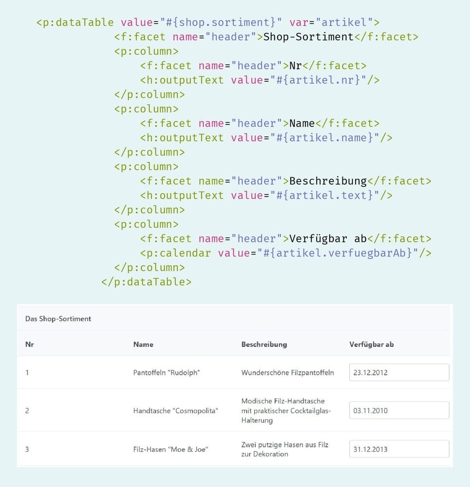

PrimeFaces Komponentenbibliothek
Einführung in PrimeFaces
PrimeFaces ist eine weit verbreitete Komponentenbibliothek für JavaServer Faces (JSF), die seit 2008 von PrimeTek als Open-Source-Framework entwickelt wird. Die Bibliothek bietet eine Vielzahl von UI-Komponenten, die die Benutzeroberfläche von Webanwendungen erweitern und verbessern können.

Importieren und Verwenden von PrimeFaces-Komponenten
Um PrimeFaces-Komponenten in Ihrem Projekt verwenden zu können, müssen Sie den PrimeFaces-Namensraum in Ihrer View deklarieren. Der Namensraum für PrimeFaces lautet http://primefaces.org/ui. Dieser Namensraum wird in der <html>-Deklaration Ihrer JSF-View eingefügt, wie diese Abbildung zeigt.

Verwendung der Kalenderkomponente
Eine der interessanten Komponenten von PrimeFaces ist die Kalenderkomponente. Diese kann einfach in einer View integriert werden, indem Sie das Tag <p:calendar/> verwenden. Die Kalenderkomponente muss innerhalb eines <h:form>-Elements platziert werden, damit das Datum an den Server gesendet wird.

Die Kalenderkomponente bietet eine benutzerfreundliche Oberfläche zur Datumsauswahl, die im Browser angezeigt wird. Die Darstellung der Kalenderkomponente wird in dieser Abbildung veranschaulicht.

Integration in Modellklassen
Um das Verfügbarkeitsdatum für Artikel in einem Webshop zu verwalten, kann die Kalenderkomponente verwendet werden. Dazu wird die Modellklasse angepasst, um ein Attribut für das Verfügbarkeitsdatum hinzuzufügen. Diese Abbildung zeigt die notwendigen Anpassungen in der Modellklasse.

In der View wird das Datum dann mittels des UEL-Ausdrucks mit der Kalenderkomponente verknüpft. PrimeFaces übernimmt die Konvertierung des Datums in eine Zeichenkette automatisch.

Nach der Anpassung wird das Verfügbarkeitsdatum für jeden Artikel angezeigt. Der Standardwert wird gemäß der Initialisierung mit new Date(0) angezeigt.
Formatierung und weitere Komponenten
PrimeFaces ermöglicht auch die Anpassung der Formatierung von Datumsangaben. Mit dem pattern-Attribut der Kalenderkomponente können Sie das Datumsformat anpassen (siehe Abbildung 45). Neben der Kalenderkomponente bietet PrimeFaces auch Editorkomponenten wie <p:textEditor>, die Textformatierung ermöglichen. Die Verwendung dieser Editorkomponente wird in dieser Abbildung gezeigt.

Die Editorkomponente kann in ihrer Funktionalität angepasst werden, um nur bestimmte Formatierungsoptionen anzuzeigen. Diese Abbildung zeigt den vollständigen Funktionsumfang der Editorkomponente und die Anpassung der sichtbaren Funktionen.

Weitere Eingabekomponenten und Panels
PrimeFaces bietet auch Eingabekomponenten wie <p:slider> und <p:spinner>, um Werte innerhalb eines bestimmten Bereichs einzugeben. Abbildung 48 zeigt die Verwendung dieser Komponenten. Zudem können Panels verwendet werden, um Komponenten zu gruppieren. Ein Beispiel für ein Panel, das mehrere Komponenten gruppiert, wird in dieser Abbildung gezeigt.


Besondere Panel-Typen wie <p:tabView> und <p:accordionPanel> ermöglichen das Umschalten zwischen Gruppen von Komponenten. Diese Panels unterscheiden sich in ihrer Darstellung, wie in Abbildung 50 gezeigt.

DataTable-Komponente und Sortierung
Die <p:dataTable>-Komponente von PrimeFaces erweitert die bekannte JSF-DataTable um zusätzliche Funktionen. Sie bindet an eine Sammlung von Daten und zeigt diese in Tabellenform an. Diese Abbildung zeigt, wie eine Tabelle in einer Demoseite integriert wird. Die Sortierung der Tabelleneinträge kann durch die Attribute sortBy und sortOrder konfiguriert werden.


Damit Benutzer die Tabelle selbst sortieren können, wird sortBy als Spaltenattribut hinzugefügt. Dies ermöglicht das Sortieren der Spalten durch Klicken auf die Titelzeile.